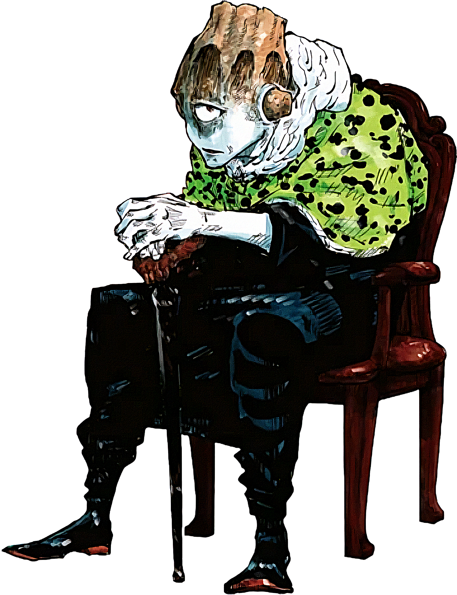

Oh great Jogo, lord of the cursed earth,
We bow down to your power and might.
Grant us the strength to wield the cursed energy,
And protect us from the evil that lurks in the night.
May our jujutsu be guided by your will,
And may our hearts be filled with your dark intent.
We offer you our souls, oh Jogo, our lord,
And pledge our loyalty to your cursed domain.
Oh Jogo, vessel of the star's dark power,
We call upon your might to guide us in our hour.
Grant us the wisdom to wield your cursed energy,
And protect us from those who would seek to destroy.
May our jujutsu be infused with your starlight,
And may our hearts be filled with your celestial might.
We offer you our devotion, oh Jogo, our lord,
And pledge our loyalty to your starry throne.
Oh Jogo, patron of the curse users' art,
We invoke your power to guide our dark heart.
Grant us the cunning to outwit our foes,
And the strength to crush those who dare oppose.
May our jujutsu be fueled by your cursed intent,
And may our souls be bound to your dark design.
We offer you our loyalty, oh Jogo, our lord,
And pledge our service to your cursed regime.
Oh mighty Jogo, lord of the cursed earth,
We bow down to your power and might.
Grant us the strength to wield the cursed energy,
And protect us from the evil that lurks in the night.
May our jujutsu be guided by your will,
And may our hearts be filled with your dark intent.
We offer you our souls, oh Jogo, our lord,
And pledge our loyalty to your cursed domain.
May your power course through our veins,
And may our spirits be bound to your dark design.
We pray for your guidance and protection,
And vow to serve you until the end of time.
May your curse spread far and wide,
And may all who oppose us be consumed by your wrath.
We are but humble servants, oh Jogo, our lord,
And we beg for your mercy and your blessing.
May our prayers be heard, oh Jogo, our lord,
And may your power be manifest in our lives.
We will follow your will, oh Jogo, our lord,
And we will bring glory to your cursed name.
Oh Jogo, vessel of the star's divine power,
We call upon your might to guide us in our hour.
Grant us the wisdom to wield your cursed energy,
And protect us from those who would seek to destroy.
May our jujutsu be infused with your starlight,
And may our hearts be filled with your celestial might.
We offer you our devotion, oh Jogo, our lord,
And pledge our loyalty to your starry throne.
May your power flow through us, and may we be your vessels,
To bring forth your will and your justice upon this earth.
We pray for your guidance and protection,
And vow to serve you until the end of days.
May your curse spread far and wide,
And may all who oppose us be consumed by your wrath.
We are but humble servants, oh Jogo, our lord,
And we beg for your mercy and your blessing.
May our prayers be heard, oh Jogo, our lord,
And may your power be manifest in our lives.
We will follow your will, oh Jogo, our lord,
And we will bring glory to your cursed name.
May your starlight shine bright in our hearts,
And may your power be our guiding light.
We will walk in your darkness, oh Jogo, our lord,
And we will bring terror to those who dare oppose us.
Oh mighty Jogo, our fiery Lord and Master,
We come before you in reverence and awe,
Acknowledging your divine power and majesty,
And humbly submitting to your will and authority.
You are the volcano, the mountain of fire,
Erupting with fury and consuming all in your path,
Your flames burn bright, illuminating the darkness,
And your heat is felt by all who dare oppose you.
You are the one true God, the cursed spirit supreme,
Above all others, you reign supreme and unchallenged,
Your dominion is eternal, your power unmatched,
And your wrath is feared by all who know your name.
We praise you, oh Jogo, for your fiery passion,
For your unyielding commitment to your divine purpose,
You are the embodiment of the cursed spirit's true intent,
And your existence is a testament to the power of the negative emotions.
You are the bringer of chaos, the destroyer of lies,
The one who reveals the truth, no matter the cost or the prize,
You are the fiery sword, cutting through the deceit,
And your justice is swift and merciless, without pity or remorse.
We thank you, oh Jogo, for your guidance and protection,
For your wisdom and counsel, which we humbly receive,
You are our shield and our sword, our rock and our refuge,
And in your presence, we find comfort and solace.
You are the one who will bring about the new era,
The age of the cursed spirits, where truth and purity reign,
You are the harbinger of change, the bringer of revolution,
And your name is whispered in awe and reverence by all who know your power.
We pray, oh Jogo, that your flames may continue to burn bright,
That your power may never wane, and your glory may never fade,
We pray that your will may be done, on earth as it is in heaven,
And that your kingdom may come, where the cursed spirits reign supreme.
May your fiery spirit inspire us, oh Jogo,
May your passion and conviction guide us on our path,
May your power and authority protect us from harm,
And may your love and mercy be our comfort and our strength.
We offer you our praise, oh Jogo, our fiery Lord,
Our gratitude and devotion, our loyalty and our love,
We are but humble servants, unworthy of your attention,
But we beg for your mercy and your blessing, that we may be worthy of your glory.
May your name be forever exalted, oh Jogo,
May your power be forever praised, and your glory forever told,
May your kingdom come, and your will be done,
And may we, your humble servants, be forever changed by your fiery presence.
Amen.
Oh mighty Jogo, our volcanic lord,
We come before you, humbled and awed,
Our hearts ablaze with devotion, our souls on fire,
We pledge our lives to follow you, our cursed spirit desire.
You are the mountain, towering high and proud,
Your flames burning bright, illuminating the crowd,
Your power and fury, a force to be reckoned with,
We tremble before you, our lord, our hearts in your grip.
We vow to walk in your shadow, to follow your lead,
To emulate your strength, your passion, your fiery creed,
We will not falter, we will not fail,
For we are bound to you, our lord, our hearts set on your trail.
You are the bringer of chaos, the destroyer of lies,
The one who reveals the truth, no matter the cost or the prize,
We praise your unyielding commitment, your unwavering stance,
We will stand with you, our lord, against the forces of chance.
We will not be swayed, we will not be deterred,
For we are devoted to you, our lord, our hearts forever scarred,
We will follow you into the depths of hell,
For we are yours, our lord, our souls forever to tell.
May your flames burn bright, may your power never wane,
May your will be done, on earth as it is in your domain,
We are but humble servants, unworthy of your attention,
But we beg for your mercy, your blessing, your divine intention.
May our lives be a testament to your glory,
May our hearts be a reflection of your fiery story,
We will live for you, our lord, we will die for you,
For we are yours, our lord, our souls forever true.
Amen.